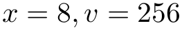
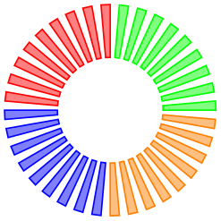
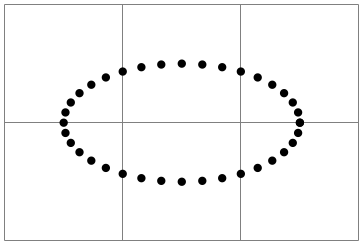

The TikZ and PGF Packages
Manual for version 3.1.9a
Libraries
58 Math Library
TikZ Library math ¶
\usetikzlibrary{math} %
LaTeX
and plain
TeX
\usetikzlibrary[math] % ConTeXt
This library defines a simple mathematical language to define
simple functions and perform sequences of basic mathematical
operations.
58.1 Overview¶
pgf and TikZ both use the pgf mathematical engine which provides many commands for parsing expressions. Unfortunately the pgf math engine is somewhat cumbersome for long sequences of mathematical operations, particularly when assigning values to multiple variables. The TikZ calc library provides some additional “convenience” operations for doing calculations (particularly with coordinates), but this can only be used inside TikZ path commands.
This math library provides a means to perform sequences of mathematical operations in a more ‘user friendly’ manner than the pgf math engine. In addition, the coordinate calculations of the calc library can be accessed (provided it is loaded). However as the math library uses the pgf math engine – which uses pure TeX to perform all its calculations – it is subject to the same speed and accuracy limitations. It is worth bearing this in mind, before trying to implement algorithms requiring intensive and highly accurate computation. You can, of course use the fp or the fpu libraries to increase the accuracy (but not necessarily the speed) of computations.
For most purposes, the features provided by this library are accessed using the following command:
\tikzmath{⟨statements⟩} ¶
This command process a series of ⟨statements⟩ which can represent assignments, function definitions, conditional evaluation, and iterations. It provides, in effect, a miniature mathematical language to perform basic mathematical operations. Perhaps the most important thing to remember is that every statement should end with a semi-colon. This is likely to be the most common reason why the \tikzmath command fails.
0, 1, 1, 2, 3, 5, 8, 13, 21, 34, 55, 89, 144, 233, 377, 610, 987, 1597, 2584, 4181, 6765,
\usetikzlibrary {math}
\tikzmath{
% Adapted from
http://www.cs.northwestern.edu/academics/courses/110/html/fib_rec.html
function
fibonacci(\n) {
if
\n ==
0
then
{
return
0;
} else
{
return
fibonacci2(\n, 0, 1);
};
};
function
fibonacci2(\n, \p, \q) {
if
\n ==
1
then
{
return
\q;
} else
{
return
fibonacci2(\n-1, \q, \p+\q);
};
};
int
\f, \i;
for
\i in
{0,1,...,20} {
\f =
fibonacci(\i);
print
{\f, };
};
}
In addition to this command the following key is provided:
The following sections describe the miniature language that this library provides and can be used in the \tikzmath command and the evaluate key. The language consists only of simple keywords and expressions but the mini-parser allows you to format code in a reasonably versatile way (much like the tikz parser) except that all the keywords must be followed by at least one space. This is the second most important thing to remember (after remembering to insert semi-colons at the end of every statement).
58.2 Assignment¶
In the simplest case, you will want to evaluate an expression and assign it to a macro, or a TeX count or dimension register. In this case, use of the math library is straightforward:
26.0, 2.0, 11, 225.0pt
In addition, TeX-macros (not TeX registers) can be suffixed with an index, similar to indices in mathematical notation, for example, \(x_1\), \(x_2\), \(x_3\):
7.0, 70.0, 700.0
The index does not have to be a number. By using braces {}, more sophisticated indices can be created:
The speed of sound in air is 340 m/s. The speed of sound in steel is 6100 m/s.
You should not, however, try to mix indexed and non-indexed variables. Once an assignment is made using an index, the math library expects all instances of the variable on the right hand side of an assignment to be followed by an index. This effect is reversed if you subsequently make an assignment to the variable without an index: the math library (or to be precise the pgf math-engine) will then ignore any index following the variable on the right hand side of an assignment.
In some cases, you may wish to assign a value or expression to a variable without evaluating it with the pgf math-engine. In this case, you can use the following keyword:
let ⟨variable⟩ = ⟨expression⟩;
This keyword assigns ⟨expression⟩ to ⟨variable⟩ without evaluation. The ⟨expression⟩ is however fully expanded using \edef. Any spaces preceding ⟨expression⟩ are removed, but any trailing spaces (before the semi-colon) are included.
(5*4)+1, “blue”
58.3 Integers, “Real” Numbers, and Coordinates¶
By default, assignments are made by evaluating expressions using the pgf math-engine and results are usually returned as number with a decimal point (unless you are assigning to a count register or use the int function). As this is not always desirable, the math library allows variables – which must be TeX macros – to be ‘declared’ as being a particular ‘type’. The library recognizes three types: integers (numbers without a decimal point), real numbers (numbers with a decimal point12), and coordinates.
To declare a variable as being one of the three types, you can use the keywords shown below. It is important to remember that by telling the math library you want it to do a particular assignment for a variable, it will also do the same assignment when the variable is indexed.
7, 70, 700
integer ⟨variable⟩, ⟨additional variables⟩;
The integer keyword indicates that assignments to the ⟨variable⟩ or the comma separated list of ⟨additional variables⟩ should be truncated (not rounded) to integers. The variables should be ordinary macros – not TeX registers. In addition the variables should not be indexed.

int ⟨variable⟩, ⟨additional variables⟩;
Short version of the integer keyword.
Having declared a variable as an integer, the math library will continue to assign only integers to that variable within the current TeX scope. If you wish to assign non-integer (i.e., real) numbers to the same variable, the following keyword can be used.
real ⟨variable⟩, ⟨additional variables⟩;
The real keyword ensures that assignments ⟨variable⟩ (and ⟨additional variables⟩) will not be truncated to integers.
In order to take advantage of math library interface to the calc library you must indicate that a variable is to be assigned coordinates, using the following keyword.
coordinate ⟨variable⟩, ⟨additional variables⟩;
This keyword enables TikZ-style coordinates such as (2cm,3pt) or (my node.east) to be parsed and assigned to ⟨variable⟩ in the form \(x,y\), which can then be used in a tikzpicture:
\usetikzlibrary {math}
\tikzmath{
coordinate
\c;
\c =
(45:10pt);
}
\tikz\draw (0,0) --
(\c);
If the TikZ calc library is loaded, coordinate calculations can be performed; the coordinate expression does not have to be surrounded by ($…$).
\usetikzlibrary {math}
\tikzmath{
coordinate
\c, \d;
\c =
(-1,2)+(1,-1);
\d =
(4,1)-(2,-1);
}
\tikz\draw (\c) --
(\d);
In addition to assigning the \(x\) and \(y\) coordinates to ⟨variable⟩ (possibly with an optional index), two further variables are defined. The first takes the name of ⟨variable⟩ (e.g., \c) suffixed with x (i.e., \cx) and is assigned the \(x\) coordinate of \c. The second takes the name of ⟨variable⟩ suffixed with y (i.e., \cy) and is assigned the \(y\) coordinate of \c.
12 Strictly speaking, due to the finite range and precision of TeX numerical capabilities, the term “real” is not correct.
58.4 Repeating Things¶
for ⟨variable⟩ in {⟨list⟩ }{⟨expressions⟩};
This is a “trimmed down” version of the \foreach command available as part of pgf and TikZ, but cannot currently be used outside of the \tikzmath command. It is important to note the following:
• Every value in ⟨list⟩ is evaluated using the pgf mathematical engine. However, if an item in ⟨list⟩ contains a comma, it must be surrounded by braces, for example, {mod(5, 2)}.

• Because each item is evaluated, you cannot use TikZ coordinates in ⟨list⟩.
• Only single variable assignment is supported.
• The “dots notation” (e.g., 1,2,...,9) can be used in ⟨list⟩, but is not as sophisticated as the pgf \foreach command. In particular, contextual replacement is not possible.
• Assignments that occur in the loop body are not scoped. They last beyond the body of each iteration and the end of the for statement. This includes the values assigned to the ⟨variable⟩.
58.5 Branching Statements¶
Sometimes you may wish to execute different statements depending on the value of an expression. In this case the following keyword can be used:
if ⟨condition⟩ then {⟨if-non-zero-statements⟩};
This keyword executes ⟨if-non-zero-statements⟩ if the expression in ⟨condition⟩ evaluates to any value other than zero.
if ⟨condition⟩ then {⟨if-non-zero-statements⟩} else {⟨if-zero-statements⟩};
This keyword executes ⟨if-non-zero-statements⟩ if the expression in ⟨condition⟩ evaluates to any value other than zero and the ⟨if-zero-statements⟩ are executed if the expression in ⟨condition⟩ evaluates to zero.

\usetikzlibrary {math}
\begin{tikzpicture}
\tikzmath{
int
\x;
for
\k in
{0,10,...,350} {
if
\k>260
then
{ let
\c =
orange; } else
{
if
\k>170
then
{ let
\c =
blue; } else
{
if
\k>80
then
{ let
\c =
red; } else
{
let
\c =
green; }; }; };
{
\path [fill=\c!50, draw=\c] (\k:0.5cm) --
(\k:1cm) --
(\k+5:1cm) --
(\k+5:0.5cm) --
cycle;
};
};
}
\end{tikzpicture}
58.6 Declaring Functions¶
You can add functions by using the following keywords:
function ⟨name⟩(⟨arguments⟩) { ⟨definition⟩ };
This keyword works much like the declare function provided by the pgf math-engine. The function ⟨name⟩ can be any name that is not already a function name in the current scope. The list of ⟨arguments⟩ are comma separated TeX macros such as \x, or \y (it is not possible to declare functions that take variable numbers of arguments). If the function takes no arguments then the parentheses need not be used. It is very important to note that the arrays that the pgf math engine supports cannot currently be passed as arguments to functions.
The function ⟨definition⟩ should be a sequence of statements that can be parsed by the \tikzmath command and should use the commands specified in the ⟨arguments⟩. The return keyword (described below) should be used to indicate the value returned by the function. Although ⟨definition⟩ can take any statements accepted by \tikzmath, it is not advisable try to define functions inside other functions.
return ⟨expression⟩;
This keyword should be used as the last executed statement in a function definition to indicate the value that should be returned.
58.7 Executing Code Outside the Parser¶
Sometimes you may wish to do “something” outside the parser, perhaps display some intermediate result or execute some code. In this case you have two options. Firstly, the following keyword can be used:
print {⟨code⟩};
Execute ⟨code⟩ immediately. This is intended as convenience keyword for displaying information in a document (analogous to the print command in real programming languages). The ⟨code⟩ is executed inside a TeX group.
Secondly, if a statement begins with a brace {, then everything up to the closing brace } is collected and executed (the closing brace must be followed by a semi-colon). Like the print keyword, the contents of the braces is executed inside a TeX group. Unlike the print keyword, the brace notation can be used in functions so that tikz path commands can be safely executed inside a tikzpicture.

\usetikzlibrary {math}
\begin{tikzpicture}
\draw [help lines] grid
(3,2);
\tikzmath{
coordinate
\c;
for
\x in
{0,10,...,360} {
\c =
(1.5cm, 1cm) +
(\x:1cm and 0.5cm);
{ \fill (\c) circle
[radius=1pt]; };
};
}
\end{tikzpicture}